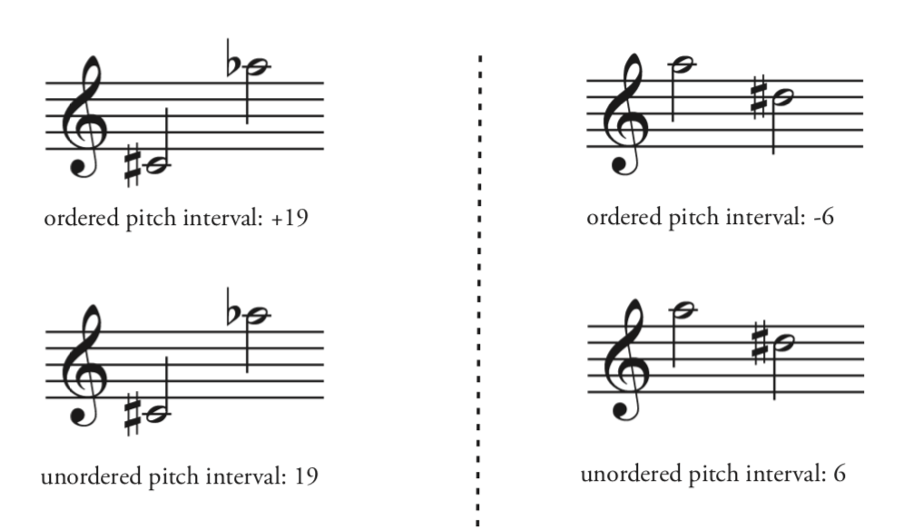
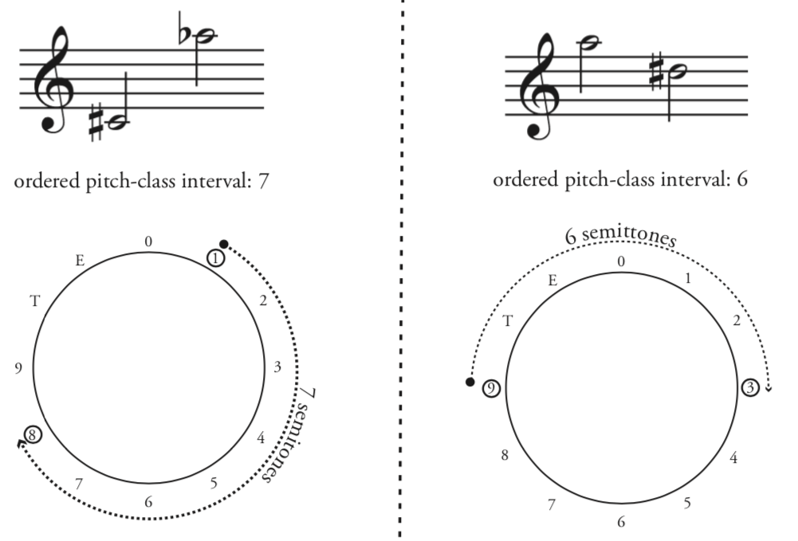
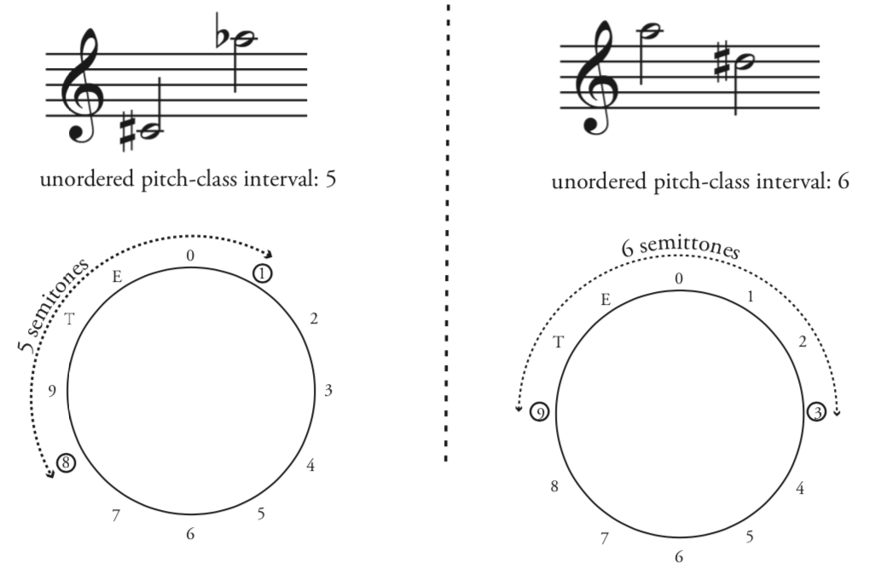

Open Music Theory：繁體中文版
整數記譜法中的音程
在調性音樂中，音程的意義取決於構成它的音高；其協和、不協和的判斷，與調性脈絡本身密切相關。想像G與B♭形成的小三度：在G小調中，它是協和音程。若改寫為G與A♯，例如放在B小調中，就成為不協和的增二度。因此，從調性角度看，即使鋼琴上按的是同一組琴鍵，這兩種音程在不同調性脈絡中仍不相同（例1）。
- consonant mi3＝協和的小三度；
- Same pitches—different notes!＝相同音高，卻是不同拼寫的音符；
- dissonant A2＝不協和的增二度。
- 左邊Gmi表示G小調，i–ii°⁶–V–i；
- 右邊Bmi表示B小調，vii°四三–i⁶–vii°六五–i。
藍色標記分別突出G–B♭與G–A♯，以和聲脈絡說明同音異名的不同功能。
例1。B♭與A♯雖然是同一個琴鍵，小三度與增二度在調性理論中仍有區別。
對照無調性音樂：當分析不以調性為依據時，B♭與A♯的拼寫差別便可不予區分，G–B♭與G–A♯也就視為相同音程。因此，本章不用「小三度」這類調性音程名稱，而改用兩個音高或音高類之間的半音數來衡量。
描述音程時，可以考慮兩組資訊：音高或音高類，以及有序或無序。兩者組合後，形成四種音程概念，整理於例2，下文會逐一說明。
| 音高音程 | 音高類音程 | |
|---|---|---|
| 有序 | 有序音高音程 | 有序音高類音程 |
| 無序 | 無序音高音程 | 無序音高類音程／音程類（IC） |
例2。無調性理論中的四種音程概念。
查看英文原文
Key Takeaways
- When analyzing atonal music, intervals may be better understood as a number of semitones, rather than using tonal interval names.
- There are four types of interval:
- Ordered pitch intervals measure the number of semitones between pitches, and indicate direction with a plus or minus sign (+/−).
- Unordered pitch intervals measure the number of semitones between pitches, but do not indicate direction (no +/−).
- Ordered pitch class intervals measure the distance between two pitches in pitch class space (the clock face), always moving clockwise (ascending). This is similar to measuring time on a 12-hour clock: 9–5 is 8 hours, never 4.
- Interval classes (unordered pitch class intervals) represent the smallest possible distance in semitones between two pitch classes; therefore, an interval class is always ≤6.
- Ordered pitch intervals are as specific as possible: they measure specific pitches (in specific octaves) and represent the directionality of the interval.
- Interval classes are the most abstract type of interval: they represent the smallest possible distance between two pitch classes.
In tonal music, because intervals are dependent upon the pitches that create them, the consonance and dissonance of intervals is determined by tonality itself. Imagine the interval created by G and B♭, a minor third. In the context of G minor, this is a consonant interval. Respelled as G and A♯, perhaps in the context of B minor, it creates a dissonant augmented second. From a tonal perspective, then, the two intervals are different in these different tonal contexts, even though they are the same keys on a piano keyboard (Example 1).
Example 1. Even though B♭ and A♯ are the same key on the keyboard, the intervals of a minor third and an augmented second are distinct in tonal theory.
Contrast this with atonal music. Because atonal music has no tonality, the distinction between B♭ and A♯ no longer matters. In this context, the intervals G–B♭ and G–A♯ are the same. For this reason, we will not use tonal interval names like "minor third." Instead, we will measure the intervals by the number of semitones between the pitches or pitch classes.
We can describe intervals according to two types of information: pitches vs. pitch classes, and ordered vs. unordered intervals. Combined, this makes four types of intervals, summarized in Example 2. Each of these interval types is explained below.
| pitch intervals | pitch-class intervals | |
|---|---|---|
| ordered intervals | ordered pitch intervals | ordered pitch-class intervals |
| unordered intervals | unordered pitch intervals | unordered pitch-class intervals / interval classes (IC) |
Example 2. Four interval types in atonal theory.
{kind=link}

- ordered pitch interval＝有序音高音程；
- unordered pitch interval＝無序音高音程。
- 左側C♯₄→A♭₅上行19個半音；
- 右側A₅→D♯₅下行6個半音。
上排保留＋19／−6的方向，下排只保留19／6的距離。
音高音程以半音數衡量兩個音高的距離，會考慮所在八度。因此，C4–E4的距離為4個半音；若E升高八度，成為C4–E5，距離就變成16：原本C到E的4個半音，再加上低E到高E的一個八度，即12個半音。
查看英文原文
Pitch Intervals (ordered and unordered)
Pitch intervals are the distance between pitches as measured in semitones, which is to say that octave is taken into consideration. Thus, the interval C4–E4 is 4: four semitones are between these notes. But if that E is moved up an octave (C4–E5), the interval becomes 16: four semitones between C and E, plus an octave (twelve semitones) between the lower E and the higher E.
Within pitch intervals, there are ordered and unordered variants. To create an ordered pitch interval, simply add a plus or minus sign to indicate whether the interval is ascending or descending. Unordered pitch intervals, by contrast, do not indicate which direction the pitches move in—they are thus more suitable for harmonic intervals. The differences between ordered and unordered pitch intervals are summarized in Example 3.
音高類音程，是在鐘面般的音高類空間中，以半音數衡量兩個音高類的距離。回到C4–E5的例子，現在只關心C與E這兩個音高類，不再指定八度。
有序音高類音程一律向上計算音高類之間的距離。想像十二個音圍成鐘面，然後順時針繞行，就很容易理解。因此，C到E為4，E到C卻是8（例4）。這與十二小時制時鐘的計時方式相似：上午9點上班，到下午5點下班，共8小時；A（音高類9）到F（音高類5）的有序音高類音程，同樣是8。
{kind=link}

- ordered pitch-class interval＝有序音高類音程；
- 7 semitones＝7個半音；
- 6 semitones＝6個半音。
- 左鐘面1→8繞行7格；
- 右鐘面9→3跨過0，共6格。
- 圖中T代表10、E代表11；
- 這裡的E是eleven的代號，不是音名E（音高類4）。
查看英文原文
Ordered Pitch-Class Intervals
Pitch-class intervals are the distance between pitch classes as measured in semitones in pitch class space—that is, around the clock face. Returning to our C4–E5 interval, we are now interested just in the pitch classes C and E, without reference to a specific octave.
Ordered pitch-class intervals measure the distance between pitch classes, always ascending. This is visualized most easily by picturing the twelve tones around a clock face, then measuring the interval by going around the circle clockwise. Thus, from C to E = 4, but E to C = 8 (Example 4). In everyday life, this is similar to measuring time on a twelve-hour clock, or calculating the duration of a shift at work: if you arrive at work at 9:00 am and work until 5:00 pm, that's 8 hours; the ordered pitch class interval from A (pc 9) to F (pc 5) is also 8.
無序音高類音程通常稱為音程類，也就是兩個音高類之間可能的最短距離。在鐘面上，可以順時針，也可以逆時針，取路徑較短的一邊。這個概念將某音程、它的轉位，以及它們的各種複音程形式聯繫起來。你可以類比音高與音高類的關係：一個音高類包含某音高、它的同音異名拼寫，以及這些拼寫移動任意八度後的音高。
因此，不同音高類之間只有六種非零音程類：1、2、3、4、5、6。順時針音程若達7，逆時針就較短，因此歸為5；同理，8歸為4、9歸為3，依此類推。C–E與E–C都屬於音程類4（例5）。
{kind=link}

unordered pitch-class interval＝無序音高類音程，即音程類。
5 semitones＝5個半音，6 semitones＝6個半音。
- 左圖的1與8之間，取較短的5格；
- 右圖的9與3位於鐘面兩端，兩個方向都是6格。
T＝10、E＝11，不是音名。
查看英文原文
Interval Classes (IC)
Unordered pitch-class intervals are usually called interval classes. Interval class is the smallest possible distance between two pitch classes. On the clock face, this means traveling either clockwise or counter-clockwise, whichever is shortest. Interval class is a useful concept because it relates intervals, their inversions, and any compound versions of those intervals. You should be able to connect this concept to the concept of pitch vs. pitch class: a pitch class is a pitch, its enharmonic respelling(s), and any octave displacements of those spellings.
This means that there are only six interval classes: 1, 2, 3, 4, 5, and 6. If you reach the pitch class interval of 7, it becomes shorter to move counter-clockwise, and 7 becomes 5. For the same reason, 8 becomes 4, 9 becomes 3, and so on. Both C–E and E–C are interval class 4 (Example 5).
把音高音程／音高類音程，與有序／無序這兩組條件組合，就得到四種音程概念。要理解各自的分析用途，可以把它們放在一條從最具體到最抽象的尺度上：一端是有序音高音程，另一端是無序音高類音程。〈集合論速查表〉也整理了它們與其他概念的關係。
在調性音樂中，有時區分十三度與六度很有用，有時則不必。同樣地，分析無調性音樂時，你會發現不同音程概念，適合描述不同現象。
- Straus, Joseph N。2016。《Introduction to Post-Tonal Theory》（後調性理論導論），第4版。紐澤西州Upper Saddle River：Prentice Hall。
- 空白鐘面（整數記譜）
- 空白鐘面（字母音名）
- 集合論速查表：整理音高與音高類、音程與音程類、集合與集合類的定義。
媒體來源與授權
- 有序與無序音高音程圖，© Bryn Hughes，Megan Lavengood改編，採CC BY-SA（姓名標示—相同方式分享）授權。
- 有序音高類音程圖，© Bryn Hughes，Megan Lavengood改編，採CC BY-SA（姓名標示—相同方式分享）授權。
- 音高類圖，© Bryn Hughes，Megan Lavengood改編，採CC BY-SA（姓名標示—相同方式分享）授權。
查看英文原文
Summary
Using various combinations of pitch interval, pitch-class interval, ordered, and unordered, we arrive at four different conceptions of interval.To wrap your mind around each of these and begin to understand their various analytical uses, think of them on a sliding scale of most concrete (the ordered pitch interval) to most abstract (the unordered pitch-class interval). You can find this related to other concepts in the Set Theory Quick Reference Sheet.
In tonal music, it’s useful to distinguish between a thirteenth and a sixth in some situations, but not others. In the same way, as you analyze atonal music, you will find that different types of intervals are useful for describing different types of phenomena.
- Straus, Joseph N. 2016. Introduction to Post-Tonal Theory. 4th ed. Upper Saddle River, NJ: Prentice Hall.
- Blank clock faces (integer notation)
- Blank clock faces (letter names)
- Set Theory Quick Reference Sheet: summarizes the definitions of pitch vs. pitch class, intervals vs. interval classes, and sets vs. set classes.
- Intervals (.pdf, .docx). Asks students to identify interval types (integer notation) within pieces of music. Worksheet playlist
Media Attributions
- Ordered vs unordered pitch interval © Bryn Hughes adapted by Megan Lavengood is licensed under a CC BY-SA (Attribution ShareAlike) license
- Ordered pitch class intervals © Bryn Hughes adapted by Megan Lavengood is licensed under a CC BY-SA (Attribution ShareAlike) license
- Pitch classes © Bryn Hughes adapted by Megan Lavengood is licensed under a CC BY-SA (Attribution ShareAlike) license